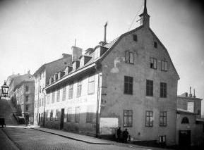
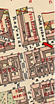

|
 
Brännkyrkagatan 6. Hörnet av Guldgränden. 1908
|
 | | Gullfjärdsplan 1955 Namn efter kvarteret Guldfjärden (Gullfjärden 1679), som i sin tur övertagit ett av Riddarfjärdens äldre namn. IHolms tomtbok 1679 har fjärden sitt nuvarande namn (Riddare fiälen) men på en av ritningarna förekommeräven en alternativ namnform: »Riddare Fiählen, eller Gwllfiählen». Detta namn, Gullfjärden, omtalas även i andrasamtida källor, sålunda i Karl XI:s Almanacksanteckningar
1.2.1689 (Gulhellen). Gwllfiählen».
|
Ett tredje namn har varitLortfjärden. Det förekommer sju gånger i Karl XI:s Almanacksanteckningar under åren 1687-97 (Lorthellen,Lort-Fielen). Enligt uppgift av den med Karl XI samtida Elias Palmskiöld har fjärden också kallats»Gråmunkeholmsfjälen» och »Kongsfjälen». Hos Palmskiöld ges följande upplysningar om fjärden:»Gråmunkeholmsfjälen som eljest kallas allmänt Lort- eller Gullfjälen, har en svavelaktig materia, tvivelsutanav den myckna dyngja och orenlighet, som dagligen ifrå alle orter ditkastas.» Namnet Gullfjärden bör uppfattassåsom ett utslag av drastisk folkhumor. | |  
Brännkyrkagatan 8. Hörnet av Ragvaldsgatan. 1908
 
Brännkyrkagatan 6-8. Från öster. 2004

Brännkyrkagatan 6-8. Från väster. 2004
|